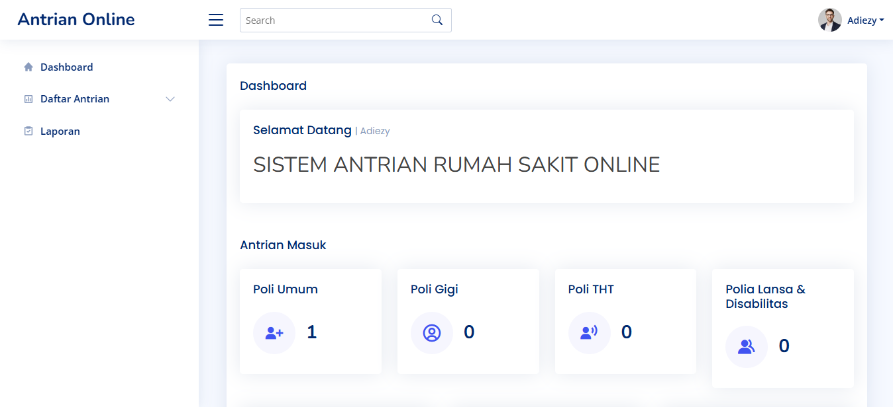
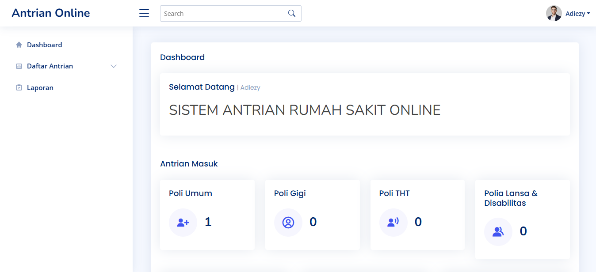

Antrian RS Sehat Sejahtera Berbasis Website

 


Sistem Antrian Rumah Sakit Berbasis Web adalah sebuah aplikasi yang dirancang untuk memudahkan pasien dalam mengambil nomor antrian di rumah sakit secara online. Sistem ini bertujuan untuk meningkatkan efisiensi pelayanan kesehatan dan mengurangi antrean fisik yang panjang di rumah sakit. Dengan sistem ini, pasien dapat melakukan pemesanan nomor antrian melalui perangkat mereka (seperti ponsel atau komputer), sehingga mereka tidak perlu menunggu terlalu lama di rumah sakit.
Fitur Utama:
- Pengambilan Nomor Antrian Online: Pasien dapat mengakses sistem secara online untuk mengambil nomor antrian untuk setiap poli atau layanan yang tersedia di rumah sakit. Hal ini memungkinkan pasien untuk memesan waktu kedatangan mereka tanpa harus datang langsung dan menunggu antrean di lokasi.
- Pendaftaran Pasien: Sebelum mengambil nomor antrian, pasien harus mendaftar di sistem dengan mengisi data pribadi yang diperlukan. Data ini bisa meliputi nama, usia, nomor identitas, serta informasi kontak yang relevan.
- Pemilihan Poli/Layanan: Pasien dapat memilih poli atau layanan medis yang ingin mereka kunjungi, seperti poli umum, poli spesialis, atau layanan darurat. Setiap layanan akan memiliki kuota antrian yang berbeda, yang dapat membantu pasien memilih waktu yang lebih tepat sesuai dengan ketersediaan dokter atau tenaga medis.
- Pemberitahuan Nomor Antrian: Setelah pasien memilih poli dan mengambil nomor antrian, sistem akan memberikan informasi nomor antrian serta perkiraan waktu panggilan. Pasien akan menerima pemberitahuan, baik melalui email, SMS, atau aplikasi, yang menginformasikan bahwa giliran mereka telah tiba.
- Pantauan Antrian Secara Real-Time: Sistem ini juga menyediakan fitur untuk memantau status antrian secara real-time, sehingga pasien dapat mengetahui seberapa banyak nomor antrian yang sudah dipanggil dan perkiraan waktu mereka akan dipanggil.
- Integrasi dengan Sistem Rumah Sakit: Sistem antrian ini dapat terintegrasi dengan sistem manajemen rumah sakit yang ada, seperti jadwal dokter dan manajemen ruangan, untuk memastikan antrian berjalan sesuai dengan jadwal dan kebutuhan rumah sakit.
- Pengelolaan Antrian oleh Petugas: Selain untuk pasien, petugas rumah sakit juga dapat mengakses sistem untuk memantau jumlah pasien yang terdaftar, memanggil pasien, serta melakukan perubahan jadwal jika diperlukan. Petugas dapat mengatur kapan antrian dibuka dan ditutup, serta memprioritaskan pasien yang membutuhkan perawatan segera.
- Laporan dan Statistik: Sistem ini menyediakan laporan dan statistik yang bisa digunakan oleh pihak manajemen rumah sakit untuk menganalisis jumlah pasien, waktu tunggu, serta kinerja tenaga medis dalam melayani pasien.
- Keamanan Data Pasien: Sistem menggunakan enkripsi data untuk memastikan bahwa informasi pribadi pasien terlindungi dengan baik. Sistem juga mematuhi regulasi terkait privasi data pasien, seperti GDPR atau hukum privasi data lainnya.
- Aksesibilitas dan Responsif: Sistem ini dibangun dengan desain responsif, sehingga dapat diakses dengan mudah melalui berbagai perangkat, baik desktop maupun mobile. Hal ini memudahkan pasien untuk memeriksa status antrian kapan saja dan dari mana saja.
Teknologi yang Digunakan:
- Laravel: Sistem ini dibangun menggunakan framework Laravel, yang terkenal dengan kemudahan penggunaan, keamanan, dan kecepatan pengembangan aplikasi web. Laravel menyediakan berbagai fitur seperti routing, autentikasi pengguna, serta manajemen basis data yang memungkinkan pembuatan sistem antrian yang efisien dan dapat diandalkan.
- MySQL: Untuk pengelolaan data, sistem ini menggunakan MySQL sebagai basis data untuk menyimpan informasi terkait pendaftaran pasien, nomor antrian, jadwal dokter, dan lainnya. MySQL adalah pilihan yang tepat karena kemampuannya dalam menangani volume data yang besar dan keandalannya dalam operasi CRUD (Create, Read, Update, Delete).
- Frontend (HTML, CSS, JavaScript): Untuk tampilan antarmuka, sistem ini menggunakan teknologi web standar seperti HTML, CSS, dan JavaScript untuk memberikan pengalaman pengguna yang responsif dan intuitif.
Keuntungan Menggunakan Sistem Antrian Rumah Sakit Berbasis Web:
- Efisiensi Waktu: Pasien tidak perlu datang lebih awal atau menghabiskan waktu lama di rumah sakit untuk menunggu giliran. Mereka dapat datang tepat waktu sesuai dengan jadwal yang sudah dipilih.
- Peningkatan Pengalaman Pasien: Pasien dapat memantau status antrian secara real-time dan mendapatkan pemberitahuan ketika giliran mereka hampir tiba, yang meningkatkan kenyamanan dan kepuasan mereka.
- Pengurangan Kerumunan: Dengan sistem antrian yang terorganisir, rumah sakit dapat mengurangi jumlah pasien yang berkumpul di ruang tunggu, mengurangi potensi penyebaran penyakit, dan meningkatkan keselamatan pasien.
- Pengelolaan yang Lebih Baik: Rumah sakit dapat mengelola antrian dengan lebih baik, memprioritaskan pasien yang membutuhkan perawatan segera, dan memantau kinerja tenaga medis dengan lebih efisien.
- Peningkatan Operasional Rumah Sakit: Sistem ini membantu rumah sakit dalam mengoptimalkan penggunaan sumber daya seperti tenaga medis, ruangan, dan peralatan medis, yang pada akhirnya meningkatkan kualitas pelayanan kesehatan.